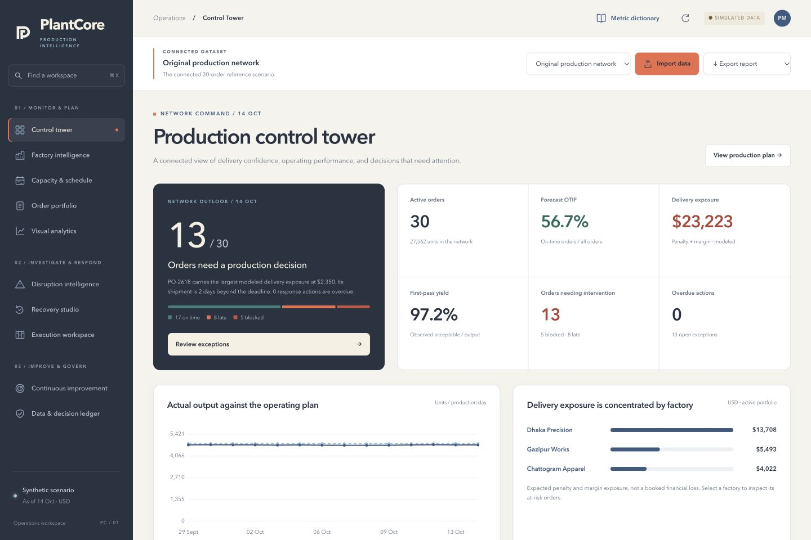

Plan across partner factories. Understand the constraints. Compare recovery alternatives. Verify that the intervention works.

Connect partner capabilities, materials, quality gates, line capacity and logistics. Inspect the daily reservations and planned WIP behind every shipment date.
Investigate cause evidence, compare operating alternatives, model uncertainty and commercial sharing, then record the decision, owners and factory commitment.
Track comparable production periods, quality guardrails and 30/60/90-day outcomes. Preserve source assumptions, operating changes and management rule reviews.
The live application runs the Python engine in your browser. Import CSV, XLSX or JSON, calculate schedules, record decisions and download reports. Browser storage retains your workspace on this device. Source code and local setup instructions are available in the repository.
pip install -r requirements.txt
uvicorn app.main:app --host
127.0.0.1 --port 8000
The complete interface runs at localhost:8000. Container configuration is also included.
Import full scenario JSON or order tables in CSV, XLSX and JSON. Missing historical evidence remains unavailable, and inferred inputs are disclosed.
Finite-capacity heuristic scheduling, reconciled stage quantities, explicit cost assumptions and repeatable uncertainty experiments. Forecasts remain scenario estimates.
A private single-user workspace with recorded approvals. Production identity, enterprise integrations and calibrated live forecasting remain separate implementation gates.
Read the full coverage matrix →